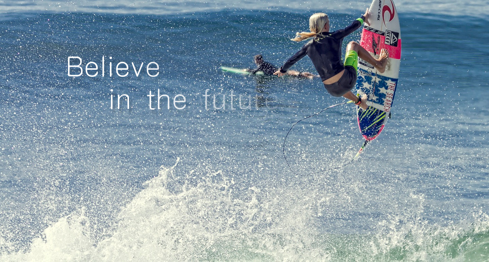

This is my
projects
-

前端web开发
小宝君 2016-03.10
-
 项目名称：盘石云信项目角色：前端开发,前端架构负责项目URL：项目业绩：负责整体前端架构搭建。独立开发者。项目描述：项目运用了前端框架Vue,配合webpack搭建前端脚手架,实现了对HTTP DNS PING 网站防篡改实时监控并反馈数据。项目周期：2017-02－至今
项目名称：盘石云信项目角色：前端开发,前端架构负责项目URL：项目业绩：负责整体前端架构搭建。独立开发者。项目描述：项目运用了前端框架Vue,配合webpack搭建前端脚手架,实现了对HTTP DNS PING 网站防篡改实时监控并反馈数据。项目周期：2017-02－至今 -
 项目名称：UFO2.0项目重构项目角色：前端开发,前端架构负责项目URL：项目描述：面向广告主和媒介主的管理平台项目业绩：运用vue2.0版本对后台ufo后台进行深层次的重构对大量 运用lessCSS预编译语法对bootstrap根据产品需求进行深度的ui定制 ,后端数据进行统一的管理整体前端架构设计与搭建。项目周期：2016-02－2017-01
项目名称：UFO2.0项目重构项目角色：前端开发,前端架构负责项目URL：项目描述：面向广告主和媒介主的管理平台项目业绩：运用vue2.0版本对后台ufo后台进行深层次的重构对大量 运用lessCSS预编译语法对bootstrap根据产品需求进行深度的ui定制 ,后端数据进行统一的管理整体前端架构设计与搭建。项目周期：2016-02－2017-01 -
 项目名称：官网媒介导航中心项目角色：前端开发项目URL：http://media.adyun.com项目描述：面向广告主和媒介主的管理平台项目业绩：官网主页添加媒介导航功能，实现投放功能。运用canvas， 构建星空图，并实现和用户之间良好体验的交互（放弃了ie8以下的 浏览器，兼容ie9以上）项目周期：2016-12－2016-12
项目名称：官网媒介导航中心项目角色：前端开发项目URL：http://media.adyun.com项目描述：面向广告主和媒介主的管理平台项目业绩：官网主页添加媒介导航功能，实现投放功能。运用canvas， 构建星空图，并实现和用户之间良好体验的交互（放弃了ie8以下的 浏览器，兼容ie9以上）项目周期：2016-12－2016-12 -
项目名称：微信公众号dps广告主平台入口项目角色：前端开发,前端架构负责项目URL：wx.adyun.com/wxdsp项目描述：从0开始构建 开始熟悉vue的整套框架 对单向数据流有了自己的理解（vuex的应用）。 版本管理工具用的是国产githuｂ码云。 ui框架直接套用的是weui的整套框架。项目业绩：对vue的整套框架有了自己的理解并且对数据流 有了更深层次的理解对vue进行了深层次的学习和理解。 实现了广告主登录查询计划单元创意等功能。项目周期：2016-12－2016-12
-
 项目名称：DSP广告主需求方平台(SSP媒介主)项目角色：前端开发项目描述：对广告主需求方平台进行模块化开发熟悉业务逻辑 进行开发。运用了js的jQuery框架，运用了百度的 fis3搭建前端的脚手架。项目业绩：实现了广告主对广告进行投放单元计划创意的创建以及广告位的管理。项目周期：2016-08－2016-11
项目名称：DSP广告主需求方平台(SSP媒介主)项目角色：前端开发项目描述：对广告主需求方平台进行模块化开发熟悉业务逻辑 进行开发。运用了js的jQuery框架，运用了百度的 fis3搭建前端的脚手架。项目业绩：实现了广告主对广告进行投放单元计划创意的创建以及广告位的管理。项目周期：2016-08－2016-11 -
项目名称：微信书项目角色：前端开发项目URL：项目描述：运用的是前端MVVM框架React，配合webpakc做脚手架 redux搭建单项数据流。前端响应式用是淘宝的 flexible做的响应式开发。项目业绩：对less sass 样式预编译语言有了更深的理解 对webpack等前端脚手架有了自己的理解 并搭建前端脚手架。项目周期：2016-05－2016-07
-
项目名称：导播软件项目角色：前端开发项目URL：dsp.adyun.com(ssp.adyun.com)运用的是前端MVVM框架Angular.js，配合grunt搭 建前端脚手架。项目业绩：对less sass 样式预编译有了自己的理解对grunt等 前端脚手架有了自己的理解并搭建前端脚手架。 ）。项目周期：2016-03－2016-5